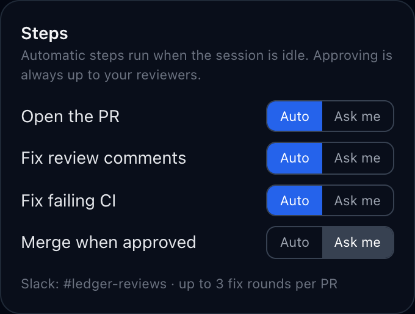
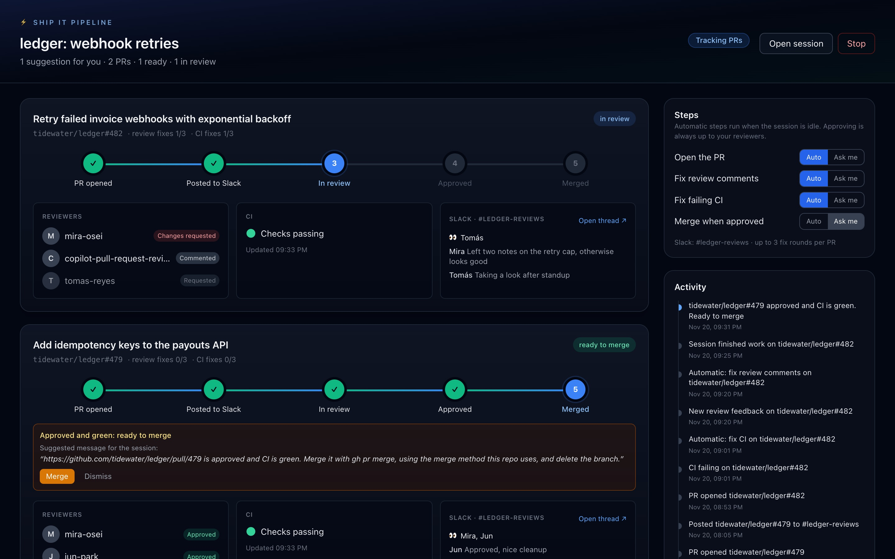

PRs that move on their own
Ship it opens the PR, posts it for review, and sends review comments and failing CI back to the session. You choose which steps are automatic. Merging asks you by default.

Run your Claude Code and Copilot sessions side by side, ship their PRs, and keep Slack under control.

Everything a busy session needs from you, in one place, with nothing to set up per project.
Ship it opens the PR, posts it for review, and sends review comments and failing CI back to the session. You choose which steps are automatic. Merging asks you by default.

Real terminals in the browser. Each card shows if a session is thinking, waiting for you or idle, what it cost, and how close it is to compacting.
Mentions and DMs still waiting on you, each with a suggested reply. Answer, react, or hand it to the session that knows the code.
Record, transcribe and summarize calls. Add links, Slack threads, past meetings or sessions so the notes know what you know.
Keep work and side projects apart. Each org has its own Claude login, Slack workspace, skills and automations.
Turn on Ship it for a session. When the code is ready, it takes over the loop you usually babysit.
Commit, push and open it with a clear description.
AutoShares the link in your review channel and tracks who picked it up.
AutoSends new review feedback to the session, then replies on the PR.
AutoFinds the failing check, fixes the cause and pushes.
AutoApproved and green? One click, or let it merge too.
Ask mePolyergon is a local app around the CLIs you already use. Your code, keys and transcripts stay on your computer.
Listens on 127.0.0.1 and rejects requests from other websites.
API keys live in a file only your user can read. The browser never sees them.
Sessions ask before running commands, unless you turn that off.
Free and open source. Read it, fork it, change it.
macOS today. Linux should work for sessions.
gh for PRs and Ship it (optional)$ git clone https://github.com/polyergon/polyergon.git $ cd polyergon $ npm ci && npm run build $ npm start # opens http://localhost:3030